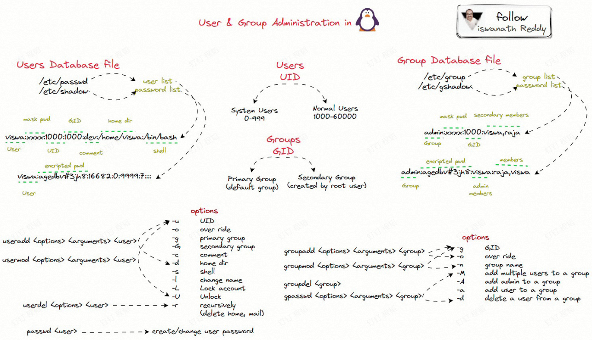
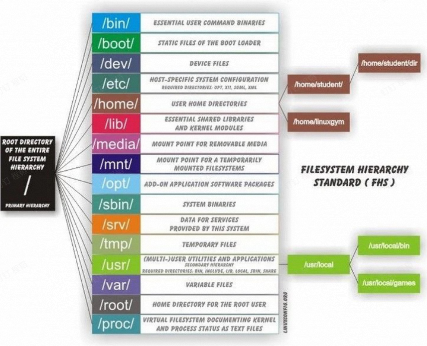
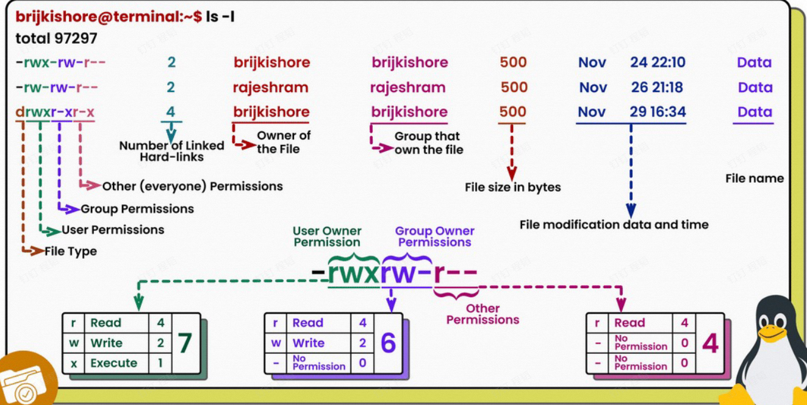
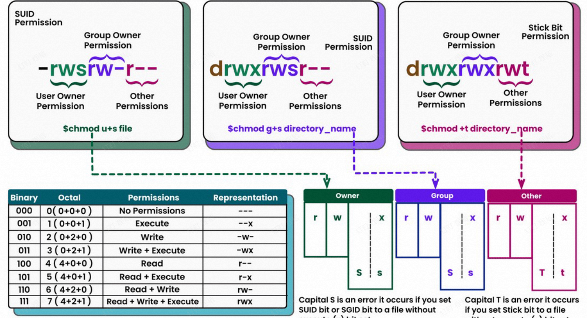
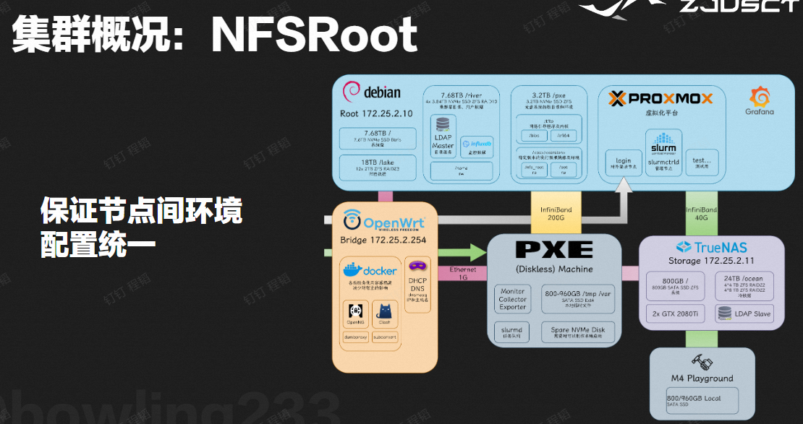

Lec.04 集群软硬件及运维基础
约 614 个字 • 35 行代码 • 预计阅读时间 2 分钟
集群相关¶
登录节点¶
直接使用学号登录集群，下面登录 m600 节点：
Warning
可以使用 VSCode 远程，但退出前需要用 /river/scripts/kill_vscode.sh 杀掉 VSCode Server。
使用集群代理¶
- proxychains 4
- hooks network-related libc functions
- redirects the connections through SOCKS 4 a/5 or HTTP proxies
- supports TCP only (no UDP/ICMP etc)
- quiet mode: -q
Linux 实践¶
获取帮助¶
Linux 用户和用户组¶

by ChatGPT
- 用户（User）
- 定义：用户是一个能够登录到系统的实体，可以是一个人、一个服务、或者一个进程。
- 用户标识符 (UID)：每个用户在系统中都有一个唯一的用户标识符。
- 用户文件：用户信息通常存储在
/etc/passwd文件中，包括用户名、用户ID (UID)、主目录、登录 shell 等。 - 家目录：每个用户通常有自己的家目录，用于存储个人文件和设置。
- 用户组（Group）
- 定义：用户组是一个用户集合，用于简化和管理对文件和目录的访问权限。
- 组标识符 (GID)：每个组在系统中都有一个唯一的组标识符。
- 组文件：组信息通常存储在
/etc/group文件中，包括组名、组ID (GID) 和组成员。 - 主要组和附加组：每个用户有一个主要组（在用户信息中定义），还可以属于一个或多个附加组。
- 权限管理
- 文件权限：Linux 使用用户和组来管理文件和目录的访问权限，每个文件或目录都有所有者（用户）、所属组以及其他用户的权限设置。
- 三种权限：读 (r)、写 (w)、执行 (x)。
Note
集群使用去中心化的用户认证：NIS, LDAP
root¶
Warning
- 不要滥用 root 账户，可能会让某些安全系统失效
sudo不是万能的，多 RTFM
Linux 一切皆文件¶
Linux 的文件系统层次¶

Linux 文件权限¶


Linux 命令大杂烩¶
常用命令
echo
date / timedatectl
reboot / poweroff
wget / curl
ps / pstree / top / htop / btop / nice / pidof / kill / killall
文件
pwd / cd / ls
find / locate / whereis / which
cat / more / head / tail / tr / wc / stat / grep / cut / diff / sort
touch / mkdir / cp / mv / rm / dd / file / tar
Linux 内核知识¶
- 内核：实现用户空间和物理硬件的交互
- Why?
- 危险指令只有 os 才能执行
- 提高稳定性
- 用户态下执行命令受到诸多检查
- 需要访问系统资源时，执行系统调用，切换到内核态
- 宏内核与微内核
- 驱动是一种内核模块
使用内核模块¶
HPC 中的软件¶

集群管理¶
- RAM Disk 和镜像部署
- NFS 挂载家目录和软件
环境管理¶
- Lmod
- 包管理器 Spack
- Conda
- 参考使用文档